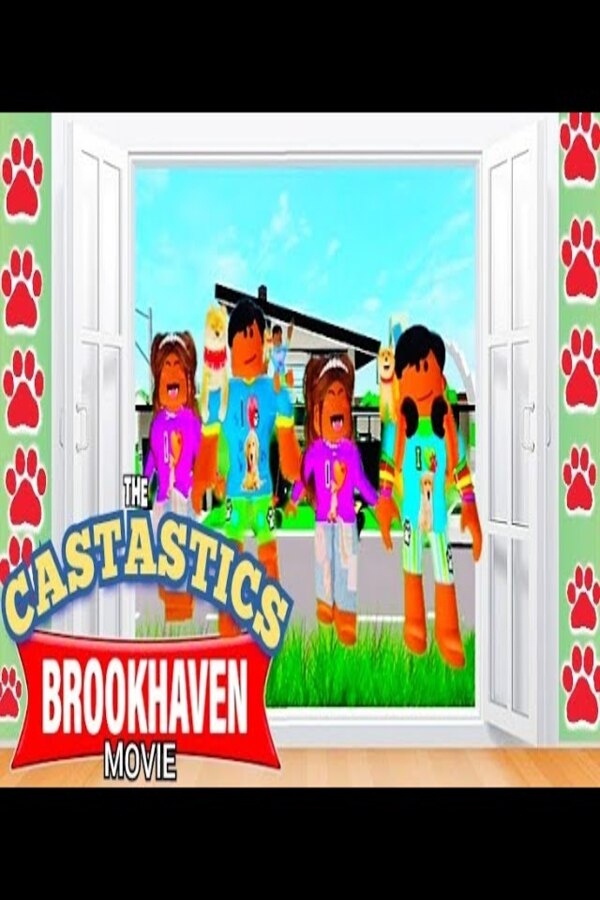
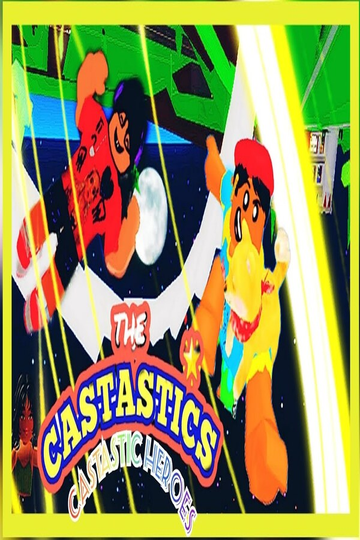
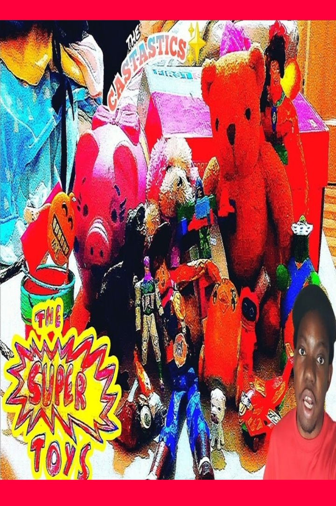
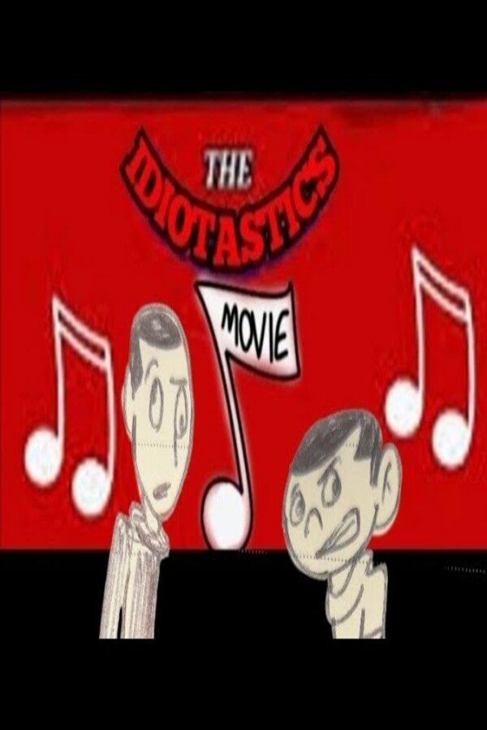
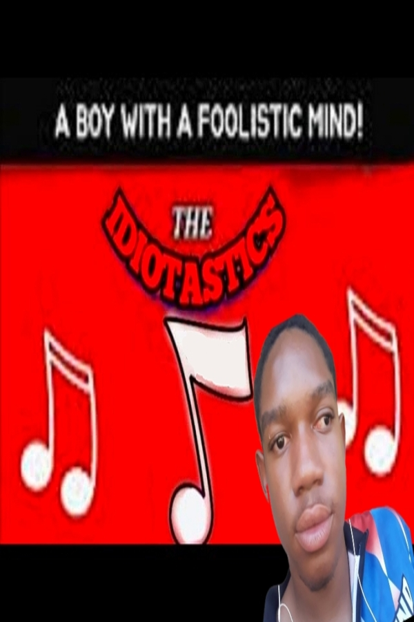
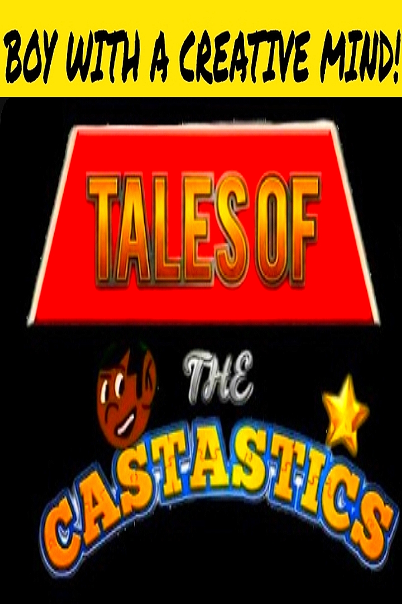

The Castastics Channel

The Castastics Movie
David, a 16 yr old boy who dreams of becoming an artist ever since, created books based upon his childhood and with the help of his magical castastian friends lives in his house. His goal is to get his artwork known.

The Castastics 2: Into The CastasticVerse
The second movie of the series. David, a 20 yr old, a famous author and completed his dreams of being an artist to get his work known. He off to a new chapter in his life, getting his dream girl, Shiann, who is now back in Trinidad. The Castastians also have to stop Jael, David's former crush from destroying the CastasticVerse.

The Castastics 3: Brookhaven
David, now an adult have adopted a kid, BabyDavid and take care of him but is feeling sad about Shiann being a gold digger and she was not who she was. But then, Emily Moraldo (David's first crush from SJS) came back to David's life and soon they both create an artsy family together.

The Castastics 4: Castastic Heroes
In a brand new era, after BabyDavid Jr. defeated Gabby and imprison her for good, her daughter take matters within her own hands and destroys the Castastics World that David worked so hard to build, so the Castastians, BabyDavid, BabyBrian, Iesha, Azariah, Elijah, and new friends alike step up and became heroes. Took place within David's creative world he built in his books and drawings.

The Castastics 5: The Final Battle
Talos returns to destroy the Castastics world David created, a world where no one can ever die and live in peace and harmony, now its up to the castastians to protect their world no matter what.

The Super Toys
Mr. Fruitó strikes again but decides to change his ways for good.

The Idiotastics Movie
Brian, David's autistic and not so smart music lover, completed his dreams of being a musician and even meeting lady gaga, his idol.

The Castastics

The Idiotastics

Tales Of The Castastics